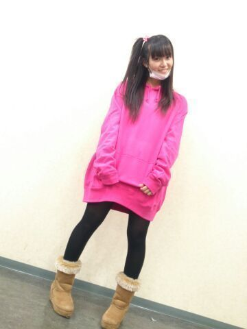
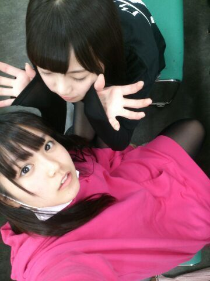
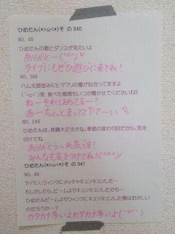

| 2013/12 11 Wed | ひめたん(*>ω<*)そ の379 |
乃木坂choice ひめたんの番です！
朝日新聞のサイトに
飛んでみてねーよろしくねー

みりりん (渡辺みり愛ちゃん)かわゆすうう
ちゃっかりぎゅーしてます///
みりりんふぁんのみなさんごめんなさい
だってかーいーんだもーん∩^^∩
あすかりん (齋藤飛鳥ちゃん)とみりりん
ふたりでわちゃわちゃしてたんだけど
かわいかったよー◎
スウェットの上着を
インターネットで買ったら
どーゆー訳かXXLサイズが届いた。

いやーなんてゆーか
ワンピースにしては肩があってなさすぎる
なんとしても着るけどさー
だって返すのもかわいそうでしょー
ひめたんってゆるキャラって感じ！って
みんなに言われたんだけど
褒めてる？ねーそれ褒めてる？
そんな私は
普段はこーゆーのあんまり
公表したくない人間なんだけど
今回は監視の目がないと
揺らいでしまいそうだから宣言しときます！
製作期間中とか密かにがんばってたんだけど
このテスト期間中に
ちょっと気が緩んでしまったので
武道館に向けてちょっと絞りたい！
ってことで断食します！
明日から！笑
多分これ読んでるメンバーのみんなは
あーひめたんまた何か言ってるよーって
思ってると思うけど
今回は がちだよー(｀・ω・´)
倒れちゃうよー
食べた分だけ動けばいいんだよー
バランスを考えれば大丈夫だよー
そんな口車には乗らーん(｀・ω・´)っつ！！！
とゆーことで応援しててね♪♪
まあ３日も続けば上出来かなー
内臓さんにも冬休みをあげないとねー

あすかりんと遊んでる図。
いつもコメントたくさん
ありがとうございます(＊´ω`＊)
最近コメント読んでたら
おにゃーのこちゃんが
ひめたん憧れるー！って///
にゃー嬉しすぎるにゃー
ありがとー///
おとこのこさんも
きゅんきゅんしたーとか
嬉しいよー///
いつもありがとーう＼(＊^^＊)／

 ひめたんは正月どう過ごす予定？
ひめたんは正月どう過ごす予定？
広島帰る？
考えてなかったー(´・ω・｀)
去年はまったりおうちで過ごしたよー
あっそうそう去年は確か
寝込んでたんだーそーだったそーだった......
ひめたんビームを地面に向かってやると
ブラジルの人に届きますかー？？
がんばったらいけるんじゃないかなー？
ひめたんは絶対に無理でしょうね( ^ω^ )
喉は自分で鳴らせるの？？
自分の意志じゃないのよー
なんかね無意識なのよ
突然鳴ることがあるの。ごろごろにゃーにゃ
ひめたんは同姓同名に会ったことあるかな？
ないですね！
まず なかもとさん にあんまり出会わないですね
ひめかちゃん はたまに遭遇するけどね
駐車場で幼いひめかちゃんが
えんえん泣いてて
ひめちゃーん泣かないでーって
ままさんがおだててる場面に出くわしたり
しますけどねー
最近、ひめたんブログにはまりすぎてて
よく寝坊するんだけど、どうしてくれるの！？
それはまーじで謝ります。
まーじごめんなさい(´・ω・｀)
ただね、許すよ！
寝坊してもしゃーない！ひめたんが許す！
ひめたんは冬の食べ物の中で何食べたいー？
お鍋すきー＊
おともだちみんなでお鍋を囲んで
お鍋パーティーとか憧れます///
ひめたん普段のメンバーへの呼び方は
どう呼んでいる？
真夏、いこたん・生駒ちゃん、いくちゃん、
れなりん、ねねころ、万理華、さゆにゃん、
みさみさ・みさ先輩、川後さん、ろってぃー、
あしゅ・あすかりん、ゆったん、るんるん、
玲香、まいやん、ずーさん、かなりん、
らりん、ななせまる、愛未、ななみん、
せいたん、ちま、まいまい、みなみ、
まっちゅん・りんご、とまと、若月、まあや
現１期生だとこんな感じ( ^O^ )
こうしてみると公式のニックネームじゃない子も
ちらほら。
ひめたんは何の鍋が好きですか？？？
最近はあっさりしたのが
食べたい気分です♪
水炊きとか美味しいよねー
カレーチーズ鍋とかゆーのもめっちゃ美味しいよ
超絶こってりしてるよー
目玉焼きにひめたんビームは、合いますか？
たったべないでー(´；ω；｀)おろろ
 ひめたんは寝たいのに
ひめたんは寝たいのに
どうしても寝れないときどうしてる？
ちょっと前そうだったなー
辛いよねー
ひめたんは携帯つつきながら音楽聴いてたよー
そんで「あー目が痛いー」ってなって
携帯置いた瞬間に寝落ち、みたいな。
ひめたんのブログの
コメント欄下２ケタに46を踏んだ方へ
手書きでコメ返するコーナー
＼ ひめたん46 ／

ごーめん文字ぴんくだから
読みにくいかも←
ひなちま (樋口日奈ちゃん)は
ラムネがだいすきなんだと。
あっ飲むやつじゃなくて食べるやつね。
(＊´・ω・＊)
コメント(375)
2013/12/11 23:42